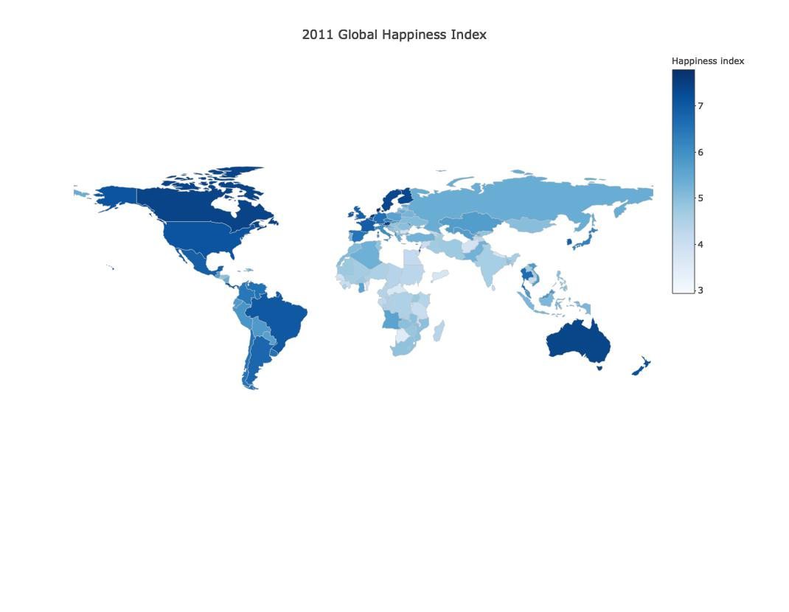
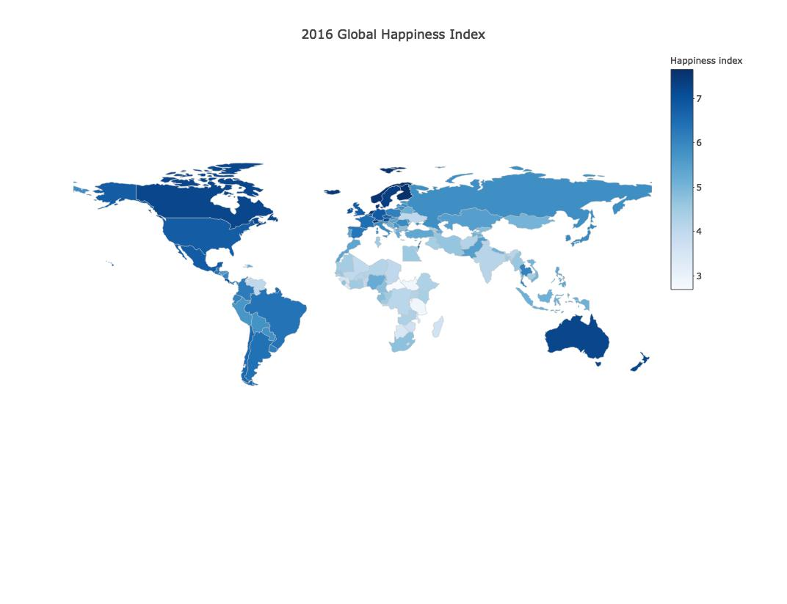
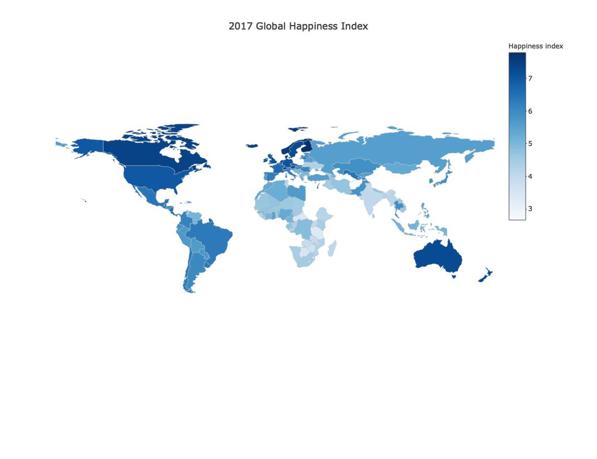
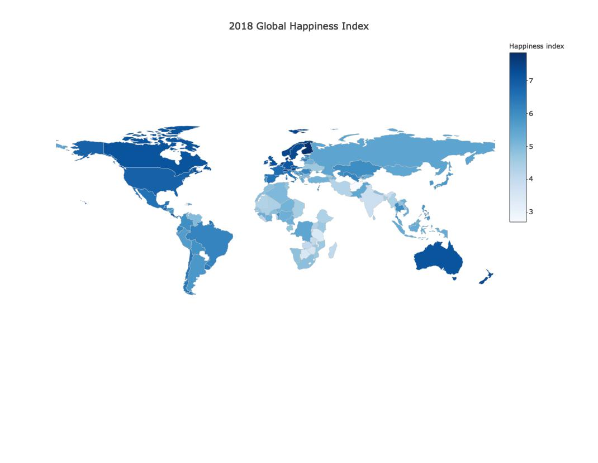

library(plotly)
library(shiny)
library(tidyverse)
library(rworldmap)
library(arsenal)
library(leaflet)
library(rworldmap)
library(countrycode)
library(viridis)
global_happy_year <- function(i){
happy_yeari = happy %>%
filter(year == i)
p <- plot_geo(happy_yeari) %>%
add_trace(
z = ~life_ladder, color = ~life_ladder, colors = 'Blues',
text = ~label, locations = ~code, marker = list(line = l)
) %>%
colorbar(title = 'Happiness index') %>%
layout(
title = paste(as.character(i), "Global Happiness Index"),
geo = g
)
return(p)
}
happy = read_csv("data/final_data.csv") %>%
janitor::clean_names() %>%
select(-long,-lat) %>%
unique %>%
mutate(label = str_c("<b>Happiness: ", round(life_ladder,2),
"</b><br>Country : ", country_name,
sep = ""),
code = countrycode(country_name, 'country.name', 'iso3c'),
code = replace_na(code,"XKX"))## Parsed with column specification:
## cols(
## country_name = col_character(),
## year = col_double(),
## life_ladder = col_double(),
## log_gdp_per_capita = col_double(),
## social_support = col_double(),
## healthy_life_expectancy_at_birth = col_double(),
## freedom_to_make_life_choices = col_double(),
## positive_affect = col_double(),
## negative_affect = col_double(),
## generosity = col_double(),
## perceptions_of_corruption = col_double(),
## long = col_double(),
## lat = col_double()
## )## Warning in countrycode(country_name, "country.name", "iso3c"): Some values were not matched unambiguously: Kosovol <- list(color = toRGB("grey"), width = 0.5)
g <- list(
showframe = FALSE,
showcoastlines = FALSE,
projection = list(type = 'Mercator')
)library(magick)## Linking to ImageMagick 6.9.9.39
## Enabled features: cairo, fontconfig, freetype, lcms, pango, rsvg, webp
## Disabled features: fftw, ghostscript, x11library(animation)
library(rbokeh)## Registered S3 method overwritten by 'pryr':
## method from
## print.bytes Rcpplibrary(htmlwidgets)
library(mapview)
library(webshot)
library(processx)
library(listviewer)
library(gridExtra)##
## Attaching package: 'gridExtra'## The following object is masked from 'package:dplyr':
##
## combinesaveWidget(global_happy_year(2011),file = "m2011.html")
saveWidget(global_happy_year(2016),file = "m2016.html")
saveWidget(global_happy_year(2017),file = "m2017.html")
saveWidget(global_happy_year(2018),file = "m2018.html")
webshot::install_phantomjs()## phantomjs has been installed to /Users/gloria/Library/Application Support/PhantomJSwebshot(url = "m2011.html",file = "data/m2011.jpg",vwidth = 990,
vheight = 750, delay = 0.5)
webshot(url = "m2016.html",file = "data/m2016.jpg",vwidth = 992,
vheight = 744, delay =0.5 )
webshot(url = "m2017.html",file = "data/m2017.jpg",vwidth = 992,
vheight = 744, delay = 0.5)
webshot(url = "m2018.html",file = "data/m2018.jpg",vwidth = 990,
vheight = 750, delay = 0.5)
list.files(path = "data/",pattern = "*.jpg",full.names = T) %>%
map(image_read) %>%
image_join() %>%
image_animate(fps=2)